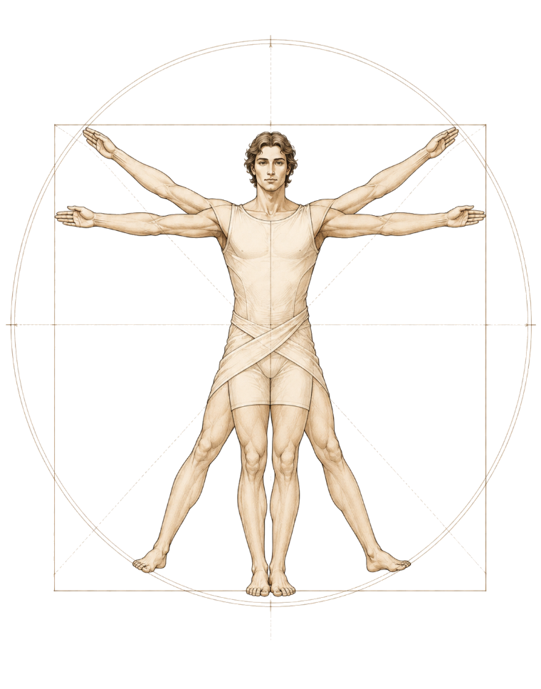

<!DOCTYPE html>
<html lang="he" dir="rtl">
<head>
<meta charset="utf-8">
<meta name="viewport" content="width=device-width, initial-scale=1">
<title>מפה אישית: ראש · לב · בטן | NGG</title>
<meta name="description" content="שאלון רפלקציה אישי לסדנת ניהול — ראש, לב, בטן.">
<link rel="preconnect" href="https://fonts.googleapis.com">
<link rel="preconnect" href="https://fonts.gstatic.com" crossorigin>
<link href="https://fonts.googleapis.com/css2?family=Assistant:wght@400;500;600;700;800&family=Frank+Ruhl+Libre:wght@400;500;700;900&display=swap" rel="stylesheet">
<style>
  *{ box-sizing:border-box; }
  html,body{ margin:0; }
  body{
    background:#EDE6DA; color:#211C17;
    font-family:'Assistant',system-ui,-apple-system,sans-serif;
    min-height:100vh; display:flex; align-items:flex-start; justify-content:center;
    padding:40px 24px;
  }
  ::selection{ background:#211C17; color:#F2EBDD; }
  .serif{ font-family:'Frank Ruhl Libre',serif; }
  button{ font-family:inherit; }
  @keyframes fadeUp{ from{ opacity:0; transform:translateY(10px);} to{ opacity:1; transform:none;} }
  @keyframes glowPulse{ 0%,100%{ opacity:.55;} 50%{ opacity:.9;} }
  .screen{ animation:fadeUp .4s ease both; width:100%; display:flex; justify-content:center; }
  .hidden{ display:none !important; }

  /* ---------- INTRO ---------- */
  .intro-card{
    width:min(940px,100%); background:#FBF6EC; border:1px solid #E2D8C6; border-radius:4px;
    box-shadow:0 24px 70px rgba(48,36,22,0.10); overflow:hidden;
    display:grid; grid-template-columns:1.15fr 0.85fr;
  }
  .intro-main{ padding:54px 50px; }
  .brand{ display:flex; align-items:center; gap:13px; margin-bottom:46px; }
  .brand-logo{ font-family:'Frank Ruhl Libre',serif; font-weight:900; font-size:27px; letter-spacing:1px; }
  .brand-div{ width:1px; height:24px; background:#D6CBB8; }
  .brand-sub{ font-size:12px; color:#8A7E6C; letter-spacing:2px; }
  .eyebrow{ font-family:'Frank Ruhl Libre',serif; font-style:italic; font-size:15px; color:#A1693C; margin-bottom:18px; letter-spacing:.5px; }
  .intro-main h1{ font-family:'Frank Ruhl Libre',serif; font-weight:700; font-size:46px; line-height:1.12; margin:0 0 26px; color:#1A150F; }
  .lead{ font-size:17px; line-height:1.75; color:#473F33; margin:0 0 16px; max-width:46ch; }
  .disclaimer{ font-size:14px; line-height:1.65; color:#857A68; font-style:italic; margin:0 0 36px; max-width:46ch; }
  .btn-primary{
    display:inline-flex; align-items:center; gap:12px; padding:17px 40px; border:none; border-radius:2px;
    background:#211C17; color:#F4EEE0; font-size:17px; font-weight:600; cursor:pointer;
    transition:transform .14s ease, background .2s ease;
  }
  .btn-primary:hover{ background:#000; transform:translateX(-3px); }
  .meta{ font-size:13px; color:#9C9080; margin-top:16px; }
  .intro-aside{
    position:relative; background:#211C17; padding:48px 38px;
    display:flex; flex-direction:column; justify-content:space-between;
  }
  .aside-fig{ position:absolute; inset:0; opacity:.5; pointer-events:none; }
  .aside-title{ position:relative; font-family:'Frank Ruhl Libre',serif; color:#EDE2CC; font-size:14px; letter-spacing:3px; opacity:.7; }
  .scale-box{
    position:relative; background:rgba(244,238,224,0.06); border:1px solid rgba(244,238,224,0.16);
    border-radius:3px; padding:20px 22px; backdrop-filter:blur(2px);
  }
  .scale-box h4{ color:#EDE2CC; font-size:13px; font-weight:700; letter-spacing:.5px; margin:0 0 14px; opacity:.85; }
  .scale-row{ display:flex; flex-direction:column; gap:9px; }
  .scale-item{ display:flex; align-items:center; gap:12px; }
  .scale-num{
    flex:none; width:26px; height:26px; border-radius:50%; border:1px solid rgba(244,238,224,0.35);
    display:flex; align-items:center; justify-content:center; font-family:'Frank Ruhl Libre',serif; font-size:14px; color:#F4EEE0;
  }
  .scale-label{ font-size:13.5px; color:#C9BEA8; }

  /* ---------- QUIZ ---------- */
  .quiz-wrap{ width:min(640px,100%); }
  .quiz-top{ display:flex; align-items:center; justify-content:space-between; margin-bottom:14px; padding:0 4px; }
  .quiz-logo{ font-family:'Frank Ruhl Libre',serif; font-weight:900; font-size:17px; letter-spacing:1px; color:#211C17; }
  .quiz-count{ font-size:13px; font-weight:600; color:#8A7E6C; letter-spacing:.5px; }
  .quiz-count span{ opacity:.5; }
  .progress-track{ height:3px; background:#DCD2C0; border-radius:999px; overflow:hidden; margin-bottom:4px; }
  .progress-fill{ height:100%; background:#211C17; border-radius:999px; transition:width .35s ease; width:0; }
  .quiz-card{
    background:#FBF6EC; border:1px solid #E2D8C6; border-radius:4px; padding:46px 44px 32px;
    box-shadow:0 18px 56px rgba(48,36,22,0.08); margin-top:14px;
  }
  .quiz-bignum{ font-family:'Frank Ruhl Libre',serif; font-size:88px; line-height:.7; color:#E7DDC9; height:46px; overflow:visible; margin-bottom:8px; }
  .quiz-stmt-wrap{ min-height:118px; display:flex; align-items:center; margin-bottom:36px; }
  .quiz-stmt{ font-family:'Frank Ruhl Libre',serif; font-weight:500; font-size:27px; line-height:1.45; color:#1A150F; margin:0; text-wrap:pretty; }
  .opt-row{ display:flex; gap:10px; }
  .opt{
    flex:1; display:flex; align-items:center; justify-content:center; min-height:72px; padding:12px 4px;
    border-radius:3px; border:1px solid #D8CDB9; background:#FFFCF6; color:#3A332B; cursor:pointer;
    transition:transform .15s ease, background .15s ease, border-color .15s ease, color .15s ease, box-shadow .15s ease;
  }
  .opt span{ font-family:'Frank Ruhl Libre',serif; font-weight:700; font-size:24px; line-height:1; }
  .opt:hover{ transform:translateY(-3px); border-color:#211C17; }
  .opt.selected{
    border-color:#211C17; background:#211C17; color:#F4EEE0; transform:translateY(-3px);
    box-shadow:0 10px 20px rgba(33,28,23,0.22);
  }
  .opt-legend{ display:flex; justify-content:space-between; margin-top:12px; font-size:12.5px; color:#9C9080; }
  .quiz-nav{ display:flex; align-items:center; justify-content:space-between; margin-top:34px; padding-top:22px; border-top:1px solid #ECE2D0; }
  .btn-back{ background:none; border:none; color:#8A7E6C; font-size:15px; font-weight:600; cursor:pointer; padding:8px 4px; transition:color .15s ease; }
  .btn-back:hover{ color:#211C17; }
  .btn-next{ border:none; border-radius:2px; padding:13px 30px; font-size:15.5px; font-weight:600; transition:background .2s ease;
    background:#211C17; color:#F4EEE0; cursor:pointer; }
  .btn-next:disabled{ background:#E3D9C6; color:#AEA28C; cursor:not-allowed; }

  /* ---------- RESULTS ---------- */
  .results-card{
    width:min(720px,100%); background:#1A150F; color:#F4EEE0; border-radius:4px;
    box-shadow:0 30px 90px rgba(20,14,6,0.4); overflow:hidden;
  }
  .results-head{ padding:44px 46px 30px; text-align:center; border-bottom:1px solid rgba(244,238,224,0.1); }
  .results-brand{ display:inline-flex; align-items:center; gap:12px; margin-bottom:24px; }
  .results-brand .logo{ font-family:'Frank Ruhl Libre',serif; font-weight:900; font-size:22px; letter-spacing:1px; color:#F4EEE0; }
  .results-brand .div{ width:1px; height:20px; background:rgba(244,238,224,0.25); }
  .results-brand .sub{ font-size:12px; color:#A99E89; letter-spacing:2px; }
  .results-head h1{ font-family:'Frank Ruhl Libre',serif; font-weight:700; font-size:34px; line-height:1.25; margin:0; color:#F7F1E3; }
  .fig-wrap{ position:relative; width:min(440px,100%); aspect-ratio:440/560; margin:18px auto 6px; }
  /* body graphic asset — centered inside .fig-wrap, sits beneath the gauges */
  .body-asset{
    position:absolute; left:50%; top:50%; transform:translate(-50%,-50%);
    height:100%; width:auto; max-width:100%; object-fit:contain;
    pointer-events:none; z-index:1;
  }
  /* neutral fallback drawing (shown only if the asset fails to load) */
  .body-fallback{ position:absolute; inset:0; z-index:1; }
  .body-fallback svg{ width:100%; height:100%; }
  /* dynamically-generated score gauges, overlaid above the asset */
  .fig-gauges{ position:absolute; inset:0; z-index:2; pointer-events:none; }
  .fig-label{ position:absolute; z-index:3; }
  .fig-label .name{ font-family:'Frank Ruhl Libre',serif; font-weight:700; font-size:23px; }
  .level-pill{
    display:inline-block; margin-top:6px; background:rgba(244,238,224,0.07);
    padding:3px 14px; border-radius:999px; font-size:12.5px; font-weight:600; letter-spacing:.5px;
  }
  /* labels frame the figure symmetrically around the central axis */
  .lbl-head{ left:62%; top:2%; width:34%; text-align:right; }
  .lbl-heart{ left:4%; top:31%; width:34%; text-align:left; }
  .lbl-gut{ left:62%; top:52%; width:34%; text-align:right; }
  .legend{ display:flex; justify-content:center; gap:34px; padding:8px 40px 14px; flex-wrap:wrap; }
  .legend-item{ display:flex; align-items:center; gap:9px; font-size:13px; color:#A99E89; }
  .legend-dot{ width:11px; height:11px; border-radius:50%; }
  .summary{ padding:6px 46px 10px; }
  .summary-row{
    display:flex; align-items:flex-start; gap:14px; padding:16px 0; border-top:1px solid rgba(244,238,224,0.08);
  }
  .summary-row .tag{ flex:none; font-size:11px; font-weight:700; letter-spacing:1px; padding:4px 10px; border-radius:2px; margin-top:3px; }
  .tag-dom{ background:rgba(255,255,255,0.10); color:#F7F1E3; border:1px solid rgba(244,238,224,0.3); }
  .tag-dev{ background:rgba(166,105,60,0.18); color:#D9A878; border:1px solid rgba(166,105,60,0.5); }
  .summary-row .txt strong{ color:#F7F1E3; font-weight:700; }
  .summary-row .txt{ font-size:14.5px; line-height:1.6; color:#C2B7A2; }
  .results-foot{ padding:14px 46px 44px; text-align:center; }
  .results-note{ font-size:13px; color:#8E8470; margin-bottom:22px; }
  .btn-restart{
    padding:14px 38px; border:1px solid rgba(244,238,224,0.3); border-radius:2px; background:transparent;
    color:#F4EEE0; font-size:15px; font-weight:600; cursor:pointer; transition:background .15s ease;
  }
  .btn-restart:hover{ background:rgba(244,238,224,0.08); }

  /* ---------- RESPONSIVE ---------- */
  @media (max-width:760px){
    body{ padding:20px 14px; }
    .intro-card{ grid-template-columns:1fr; }
    .intro-main{ padding:38px 28px; }
    .intro-main h1{ font-size:34px; }
    .intro-aside{ padding:34px 28px; }
    .quiz-card{ padding:32px 24px 24px; }
    .quiz-stmt{ font-size:22px; }
    .quiz-stmt-wrap{ min-height:96px; }
    .opt{ min-height:60px; }
    .opt span{ font-size:20px; }
    .results-head, .results-foot{ padding-left:24px; padding-right:24px; }
    .summary{ padding-left:24px; padding-right:24px; }
    .legend{ gap:18px; }
    .fig-label .name{ font-size:19px; }
    .level-pill{ font-size:11px; padding:2px 10px; }
    .lbl-head{ left:60%; width:38%; }
    .lbl-heart{ left:2%; width:38%; }
    .lbl-gut{ left:60%; width:38%; }
  }
</style>
</head>
<body>
<div id="app"></div>

<script>
(function(){
  "use strict";

  /* =========================================================================
     מאגר ההיגדים — שיוך הקטגוריה (head/heart/gut) הוא נתון פנימי בלבד.
     הוא לעולם אינו מוצג למשתמש במהלך מענה השאלון, ומשמש אך ורק לחישוב הניקוד.
     ========================================================================= */
  var STATEMENTS = [
    { id:'h1', category:'head',  text:'אני מצליח/ה לראות את התמונה הרחבה והאסטרטגית, ולא רק את המשימה המיידית' },
    { id:'h2', category:'head',  text:'אני מקבל/ת החלטות ניהוליות על בסיס נתונים, עובדות וניתוח מסודר' },
    { id:'h3', category:'head',  text:'אני יודע/ת לתעדף ביעילות בין משימות מתחרות, גם תחת לחץ זמנים' },
    { id:'h4', category:'head',  text:'אני מזהה דפוסים, מגמות וסיכונים עתידיים לפני שהם הופכים לבעיה בשטח' },
    { id:'h5', category:'head',  text:'אני יודע/ת לפרק אתגרים ובעיות מורכבות לחלקים פשוטים שניתן לטפל בהם' },
    { id:'h6', category:'head',  text:'אני שואל/ת שאלות שמחדדות חשיבה ומעודדות העמקה, ולא רק מגיב/ה למה שקורה' },
    { id:'e1', category:'heart', text:'אני מזהה מתי חבר או חברת צוות נמצאים במצוקה, גם אם דבר לא נאמר לי במפורש' },
    { id:'e2', category:'heart', text:'אנשים סביבי מרגישים בנוח לשתף אותי בקשיים, בחששות או באי-הסכמות' },
    { id:'e3', category:'heart', text:'אני מקשיב/ה באמת ובסבלנות לאחרים, ולא רק ממתין/ה לתורי לדבר' },
    { id:'e4', category:'heart', text:'אני יודע/ת לנהל שיחות מורכבות וקשות מבלי להיכנס למגננה או למתקפה אישית' },
    { id:'e5', category:'heart', text:'אני מודע/ת להשפעה הרגשית ולהשלכות של מצב הרוח וההתנהגות שלי על הסובבים אותי' },
    { id:'e6', category:'heart', text:'אני מצליח/ה לחבר אנשים למשמעות ולמוטיבציה פנימית, ולא רק לחלק להם משימות יבשות' },
    { id:'g1', category:'gut',   text:'אני מסוגל/ת לקבל החלטות אמיצות ולהתקדם גם כאשר המידע שברשותי חלקי ביותר' },
    { id:'g2', category:'gut',   text:'אני סומכ/ת על האינטואיציה ותחושות הבטן המקצועיות שלי לצד בחינת הנתונים היבשים' },
    { id:'g3', category:'gut',   text:'אני לא נמנע/ת משיחות קשות, מהצבת גבולות ברורים או מקבלת החלטות לא פופולריות' },
    { id:'g4', category:'gut',   text:'אני שומר/ת על יציבות ורוגע פנימי גם כשהסביבה שלי כאוטית, לחוצה ולא ודאית' },
    { id:'g5', category:'gut',   text:'אני מוכן/ה לקחת סיכונים מחושבים ולשלם מחיר אישי מסוים כדי לקדם שינויים נחוצים' },
    { id:'g6', category:'gut',   text:'אני קשוב/ה לתחושות הפיזיות של הגוף שלי (כיווץ, מתח, שקט) ולא מתעלם/ת מהן בקבלת החלטות' }
  ];

  var SCALE = [
    { v:1, label:'כמעט אף פעם לא' },
    { v:2, label:'לעיתים רחוקות' },
    { v:3, label:'לפעמים' },
    { v:4, label:'לעיתים קרובות' },
    { v:5, label:'כמעט תמיד' }
  ];

  var ACCENTS = { head:'#7C9BCF', heart:'#DB8C97', gut:'#D6AC5E' };
  var CENTER_HE = { head:'ראש', heart:'לב', gut:'בטן' };
  // טקסט מלווה קצר לכל מרכז (פלט — מותר להשתמש בשמות הקטגוריות בשלב זה).
  var CENTER_BLURB = {
    head:'חשיבה אנליטית, ראייה אסטרטגית וקבלת החלטות מבוססת נתונים.',
    heart:'אינטליגנציה רגשית, הקשבה וחיבור אנושי של הצוות.',
    gut:'אינטואיציה, אומץ ניהולי ונוכחות יציבה תחת אי-ודאות.'
  };

  var AUTO_ADVANCE = true;

  var byId = {};
  STATEMENTS.forEach(function(s){ byId[s.id] = s; });

  function shuffle(arr){
    var a = arr.slice();
    for (var i = a.length - 1; i > 0; i--){
      var j = Math.floor(Math.random() * (i + 1));
      var t = a[i]; a[i] = a[j]; a[j] = t;
    }
    return a;
  }

  function levelOf(score){ return score <= 14 ? 'נמוך' : (score <= 22 ? 'בינוני' : 'גבוה'); }

  var state = {
    screen: 'intro',
    index: 0,
    responses: {},
    order: shuffle(STATEMENTS.map(function(s){ return s.id; }))
  };

  var advanceTimer = null;
  var app = document.getElementById('app');

  function esc(str){
    return String(str).replace(/[&<>"']/g, function(c){
      return { '&':'&amp;', '<':'&lt;', '>':'&gt;', '"':'&quot;', "'":'&#39;' }[c];
    });
  }

  /* ---------------- Body figure (SVG) ---------------- */
  function bodyPaths(stroke, fill, sw){
    return ''
      + '<circle cx="220" cy="74" r="42" fill="'+fill+'" stroke="'+stroke+'" stroke-width="'+sw+'"/>'
      + '<line x1="220" y1="116" x2="220" y2="132" stroke="'+stroke+'" stroke-width="'+sw+'" stroke-linecap="round"/>'
      + '<path d="M168 138 Q220 122 272 138 L286 300 Q220 320 154 300 Z" fill="'+fill+'" stroke="'+stroke+'" stroke-width="'+sw+'" stroke-linejoin="round"/>'
      + '<line x1="178" y1="152" x2="120" y2="300" stroke="'+stroke+'" stroke-width="'+(sw+6)+'" stroke-linecap="round"/>'
      + '<line x1="262" y1="152" x2="320" y2="300" stroke="'+stroke+'" stroke-width="'+(sw+6)+'" stroke-linecap="round"/>'
      + '<line x1="196" y1="308" x2="180" y2="506" stroke="'+stroke+'" stroke-width="'+(sw+8)+'" stroke-linecap="round"/>'
      + '<line x1="244" y1="308" x2="262" y2="506" stroke="'+stroke+'" stroke-width="'+(sw+8)+'" stroke-linecap="round"/>';
  }

  function gauge(cx, cy, r, score, accent){
    var C = 2 * Math.PI * r;
    var pct = Math.max(0, Math.min(1, (score - 6) / 24));
    var dash = (pct * C).toFixed(1) + ' ' + C.toFixed(1);
    return ''
      + '<g>'
      + '<circle cx="'+cx+'" cy="'+cy+'" r="'+(r+12)+'" fill="'+accent+'" opacity="0.16" style="filter:blur(7px); animation:glowPulse 3.4s ease-in-out infinite;"/>'
      + '<circle cx="'+cx+'" cy="'+cy+'" r="'+r+'" fill="none" stroke="rgba(244,238,224,0.14)" stroke-width="6"/>'
      + '<circle cx="'+cx+'" cy="'+cy+'" r="'+r+'" fill="none" stroke="'+accent+'" stroke-width="6" stroke-linecap="round" '
      +   'stroke-dasharray="'+dash+'" transform="rotate(-90 '+cx+' '+cy+')" style="transition:stroke-dasharray 1s cubic-bezier(.5,0,.2,1);"/>'
      + '<text x="'+cx+'" y="'+(cy+9)+'" text-anchor="middle" font-family="\'Frank Ruhl Libre\',serif" font-weight="700" font-size="26" fill="#F7F1E3">'+score+'</text>'
      + '</g>';
  }

  function neutralFigureSVG(){
    return '<svg viewBox="0 0 440 560" width="100%" height="100%" preserveAspectRatio="xMidYMid meet">'
      + bodyPaths('rgba(237,226,204,0.5)', 'rgba(237,226,204,0.05)', 2) + '</svg>';
  }

  // Neutral fallback drawing for the results screen — used only if the
  // body-map-human.png asset fails to load.
  function fallbackFigureSVG(){
    return '<svg viewBox="0 0 440 560" width="100%" height="100%" preserveAspectRatio="xMidYMid meet">'
      + bodyPaths('rgba(244,238,224,0.22)', 'rgba(244,238,224,0.03)', 2.2) + '</svg>';
  }

  // Score gauges only — overlaid on top of the body asset. Gauges sit on the
  // central axis (x=220): head slightly larger, heart and gut matched.
  function scoredFigureSVG(scores){
    return '<svg class="fig-gauges" viewBox="0 0 440 560" width="100%" height="100%" preserveAspectRatio="xMidYMid meet">'
      + gauge(220, 80, 42, scores.head, ACCENTS.head)
      + gauge(220, 212, 34, scores.heart, ACCENTS.heart)
      + gauge(220, 305, 34, scores.gut, ACCENTS.gut)
      + '</svg>';
  }

  /* ---------------- Screens ---------------- */
  function renderIntro(){
    return ''
    + '<div class="screen"><div class="intro-card">'
    +   '<div class="intro-main">'
    +     '<div class="brand"><div class="brand-logo">NGG</div><div class="brand-div"></div><div class="brand-sub">ייעוץ והדרכה ניהולית</div></div>'
    +     '<div class="eyebrow">שאלון רפלקציה אישי</div>'
    +     '<h1>מפה אישית:<br>ראש · לב · בטן</h1>'
    +     '<p class="lead">מנהיגות אפקטיבית משלבת ניתוח רציונלי, חיבור אנושי ואומץ ניהולי. השאלון נועד לעזור לך לזהות את הנטיות הדומיננטיות אצלך כיום — ואת האזורים שבהם כדאי להשקיע מאמץ מודע לפיתוח ולאיזון.</p>'
    +     '<p class="disclaimer">הכלי אינו שאלון אבחוני מתוקף מחקרית. מטרתו לעורר מחשבה ולשמש עוגן לשיח, ללמידה ולרפלקציה במהלך הסדנה.</p>'
    +     '<button class="btn-primary" data-action="start">להתחלת השאלון<span class="serif">→</span></button>'
    +     '<div class="meta">18 היגדים · כ־5 דקות · דרג/י לפי התנהגותך <strong>בפועל</strong></div>'
    +   '</div>'
    +   '<div class="intro-aside">'
    +     '<div class="aside-fig">' + neutralFigureSVG() + '</div>'
    +     '<div class="aside-title">המרכזים הניהוליים</div>'
    +     '<div class="scale-box"><h4>סולם הדירוג</h4><div class="scale-row">'
    +       SCALE.map(function(s){
              return '<div class="scale-item"><span class="scale-num">'+s.v+'</span><span class="scale-label">'+esc(s.label)+'</span></div>';
            }).join('')
    +     '</div></div>'
    +   '</div>'
    + '</div></div>';
  }

  function renderQuiz(){
    var total = state.order.length;
    var idx = state.index;
    var curId = state.order[idx];
    var cur = byId[curId];
    var curVal = state.responses[curId];
    var isLast = idx === total - 1;
    var canNext = curVal != null;
    var progress = ((idx + 1) / total * 100);

    var opts = SCALE.map(function(s){
      var sel = curVal === s.v;
      return '<button class="opt'+(sel?' selected':'')+'" data-action="select" data-value="'+s.v+'" aria-pressed="'+(sel?'true':'false')+'">'
        + '<span>'+s.v+'</span></button>';
    }).join('');

    return ''
    + '<div class="screen"><div class="quiz-wrap">'
    +   '<div class="quiz-top"><div class="quiz-logo">NGG</div>'
    +     '<div class="quiz-count">היגד '+(idx+1)+' <span>/ '+total+'</span></div></div>'
    +   '<div class="progress-track"><div class="progress-fill" style="width:'+progress+'%;"></div></div>'
    +   '<div class="quiz-card">'
    +     '<div class="quiz-bignum">'+(idx+1)+'</div>'
    +     '<div class="quiz-stmt-wrap"><p class="quiz-stmt">'+esc(cur.text)+'</p></div>'
    +     '<div class="opt-row">'+opts+'</div>'
    +     '<div class="opt-legend"><span>כמעט אף פעם לא</span><span>כמעט תמיד</span></div>'
    +     '<div class="quiz-nav">'
    +       '<button class="btn-back" data-action="back">→ הקודם</button>'
    +       '<button class="btn-next" data-action="next"'+(canNext?'':' disabled')+'>'+(isLast?'צפייה בתוצאות':'הבא')+'</button>'
    +     '</div>'
    +   '</div>'
    + '</div></div>';
  }

  function computeScores(){
    var scores = { head:0, heart:0, gut:0 };
    STATEMENTS.forEach(function(s){
      var r = state.responses[s.id];
      if (r) scores[s.category] += r;
    });
    return scores;
  }

  function renderResults(){
    var scores = computeScores();
    var keys = ['head','heart','gut'];

    // מרכז דומיננטי (הגבוה) ומרכז לפיתוח (הנמוך)
    var dominant = keys.reduce(function(a,b){ return scores[b] > scores[a] ? b : a; });
    var develop  = keys.reduce(function(a,b){ return scores[b] < scores[a] ? b : a; });

    function pill(k){
      var ac = ACCENTS[k];
      return '<div class="level-pill" style="color:'+ac+'; border:1px solid '+ac+';">'+levelOf(scores[k])+'</div>';
    }

    var legend = keys.map(function(k){
      return '<div class="legend-item"><span class="legend-dot" style="background:'+ACCENTS[k]+';"></span>'
        + CENTER_HE[k] + ' — ' + scores[k] + ' מתוך 30</div>';
    }).join('');

    var summary = ''
      + '<div class="summary-row"><span class="tag tag-dom">דומיננטי</span><div class="txt">'
      +   '<strong>'+CENTER_HE[dominant]+'</strong> — המרכז החזק שלך כרגע ('+scores[dominant]+'/30). '+CENTER_BLURB[dominant]
      + '</div></div>'
      + '<div class="summary-row"><span class="tag tag-dev">לפיתוח</span><div class="txt">'
      +   '<strong>'+CENTER_HE[develop]+'</strong> — האזור שכדאי לחזק לאיזון ('+scores[develop]+'/30). '+CENTER_BLURB[develop]
      + '</div></div>';

    return ''
    + '<div class="screen"><div class="results-card">'
    +   '<div class="results-head">'
    +     '<div class="results-brand"><div class="logo">NGG</div><div class="div"></div><div class="sub">המפה האישית שלך</div></div>'
    +     '<h1>ראש · לב · בטן</h1>'
    +   '</div>'
    +   '<div class="fig-wrap">'
    +     ''
    +     '<div id="bodyFallback" class="body-fallback" style="display:none;">'+fallbackFigureSVG()+'</div>'
    +     scoredFigureSVG(scores)
    +     '<div class="fig-label lbl-head"><div class="name" style="color:'+ACCENTS.head+';">ראש</div>'+pill('head')+'</div>'
    +     '<div class="fig-label lbl-heart"><div class="name" style="color:'+ACCENTS.heart+';">לב</div>'+pill('heart')+'</div>'
    +     '<div class="fig-label lbl-gut"><div class="name" style="color:'+ACCENTS.gut+';">בטן</div>'+pill('gut')+'</div>'
    +   '</div>'
    +   '<div class="legend">'+legend+'</div>'
    +   '<div class="summary">'+summary+'</div>'
    +   '<div class="results-foot">'
    +     '<div class="results-note">כל מרכז מדורג בין 6 ל־30 — נמוך · בינוני · גבוה</div>'
    +     '<button class="btn-restart" data-action="restart">למילוי מחדש</button>'
    +   '</div>'
    + '</div></div>';
  }

  function render(){
    var html;
    if (state.screen === 'intro') html = renderIntro();
    else if (state.screen === 'quiz') html = renderQuiz();
    else html = renderResults();
    app.innerHTML = html;
  }

  /* ---------------- Actions ---------------- */
  function start(){ state.screen = 'quiz'; state.index = 0; render(); }

  function select(value){
    var curId = state.order[state.index];
    state.responses[curId] = value;
    render();
    if (AUTO_ADVANCE){
      clearTimeout(advanceTimer);
      advanceTimer = setTimeout(next, 380);
    }
  }

  function next(){
    var total = state.order.length;
    var curId = state.order[state.index];
    if (state.responses[curId] == null) return; // חובה למענה לפני המשך
    if (state.index >= total - 1){ state.screen = 'results'; render(); return; }
    state.index += 1;
    render();
  }

  function back(){
    clearTimeout(advanceTimer);
    if (state.index <= 0){ state.screen = 'intro'; render(); return; }
    state.index -= 1;
    render();
  }

  function restart(){
    clearTimeout(advanceTimer);
    state.screen = 'intro';
    state.index = 0;
    state.responses = {};
    state.order = shuffle(STATEMENTS.map(function(s){ return s.id; }));
    render();
  }

  /* ---------------- Event delegation ---------------- */
  app.addEventListener('click', function(ev){
    var btn = ev.target.closest('[data-action]');
    if (!btn) return;
    var action = btn.getAttribute('data-action');
    if (action === 'start') start();
    else if (action === 'select') select(parseInt(btn.getAttribute('data-value'), 10));
    else if (action === 'next') next();
    else if (action === 'back') back();
    else if (action === 'restart') restart();
  });

  // קיצורי מקלדת בזמן השאלון: 1–5 לבחירה, חצים לניווט.
  document.addEventListener('keydown', function(ev){
    if (state.screen !== 'quiz') return;
    if (ev.key >= '1' && ev.key <= '5'){ select(parseInt(ev.key, 10)); }
    else if (ev.key === 'ArrowLeft'){ next(); }   // RTL: שמאל = קדימה
    else if (ev.key === 'ArrowRight'){ back(); }   // RTL: ימין = אחורה
  });

  render();
})();
</script>
</body>
</html>
